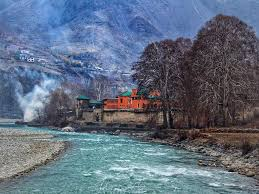
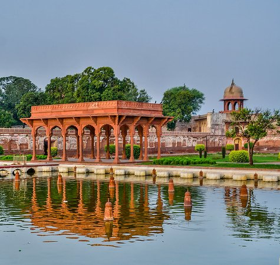
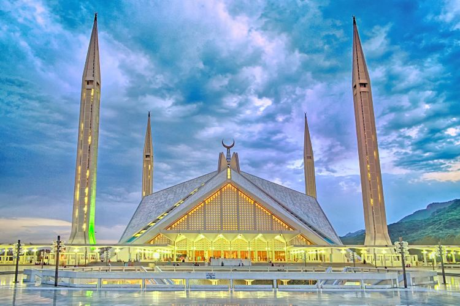

Regions Of Pakistan
The country of Pakistan is divided into four provinces and three territories, each with its own distinct culture and flavor:
KHYBER PAKHTUNKHWA
Major cities/destinations: Peshawar, Chitral, Kalash Valleys Far to the west of the country, and now including what was once known as the Federally Administered Tribal Areas (FATA), this province borders Afghanistan. Home primarily to the Pakhtun (Pashtun) people, many parts of this province are evocative of traveling Afghanistan. Some parts are off-limits—especially the south and regions along the Afghan border—but natural

\Chitral Fort, KPK
SINDH
Major cities/destinations: Karachi, Hyderabad, Sehwan Sharif The southernmost province of Pakistan is home to its biggest city, Karachi. But venture out into the rural areas, known as “interior Sindh”,and you’ll find a mystic realm of moody deserts, Sufi shrines, and abandoned forts. Don’t miss my guide to traveling in Sindh.

Sunset at Gorakh Hill in Sindh
PUNJAB
Major cities/destinations: Lahore, Rawalpindi, Multan Pakistan’s wealthiest province sits in the middle of the country. Though vast fields of wheat and other crops make stereotypical Punjabi landscapes, there are also plenty of massive Mughal relics and nature tinged with green to keep travelers busy. It’s also home to my absolute favorite city in Pakistan, Lahore.

Shalimar Bagh (Shalimar Gardens) in Lahore, Punjab
BALOCHISTAN
Major cities/destinations: Quetta, Gwadar, Hingol National Park, Makran Coastal Highway Bordering Iran and Afghanistan, the country’s largest province is also one of the least traveled. Home to deserts, dusty mountains, and azure coastlines, this province is unfortunately off-limits to foreign travelers aside from those doing the Iran-Pakistan overland border crossing.

Uch Sharif, Pakistan
ISLAMABAD, CAPITAL OF PAKISTAN
Islamabad – the capital of Pakistan – is located in the Pothohar Plateau in the north of the country, within the Islamabad Capital Territory. The city has a population of 2 million. Together with its neighbouring twin city of Rawalpindi, the greater Islamabad-Rawalpindi metropolitan area is the third largest in Pakistan with a population of over 4.5 million people. Islamabad – the capital city of Pakistan, is one of the most beautiful cities in the South Asian region. Wide, tree-lined streets adorn the various sectors and zones of the city, making it accessible and spectacular. A meticulously planned city by renowned town planners Doxiadis Associates, Islamabad is the fastest growing city in terms of population, economy and urban development.

Faisal Mosque, Islamabad, Pakistan